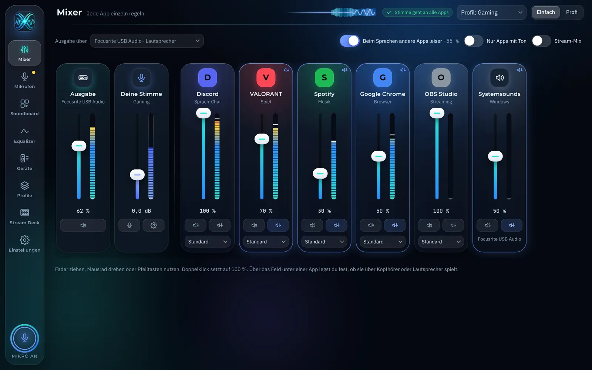
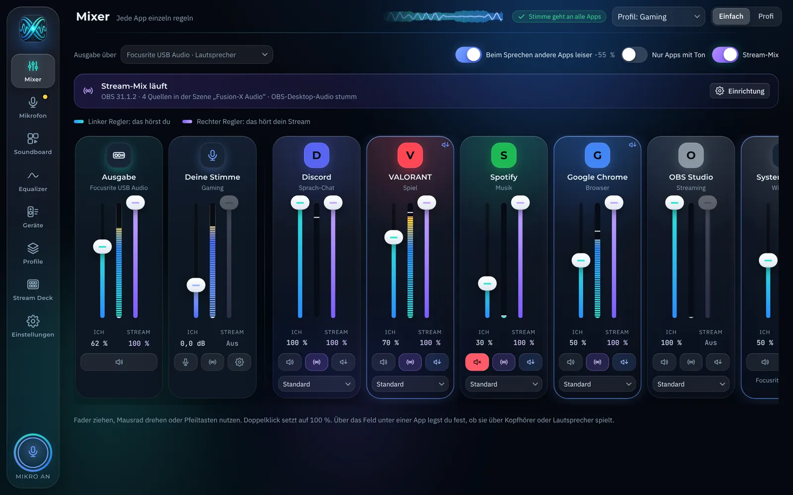
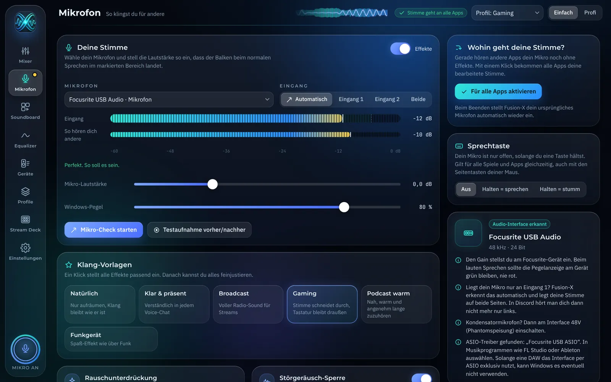
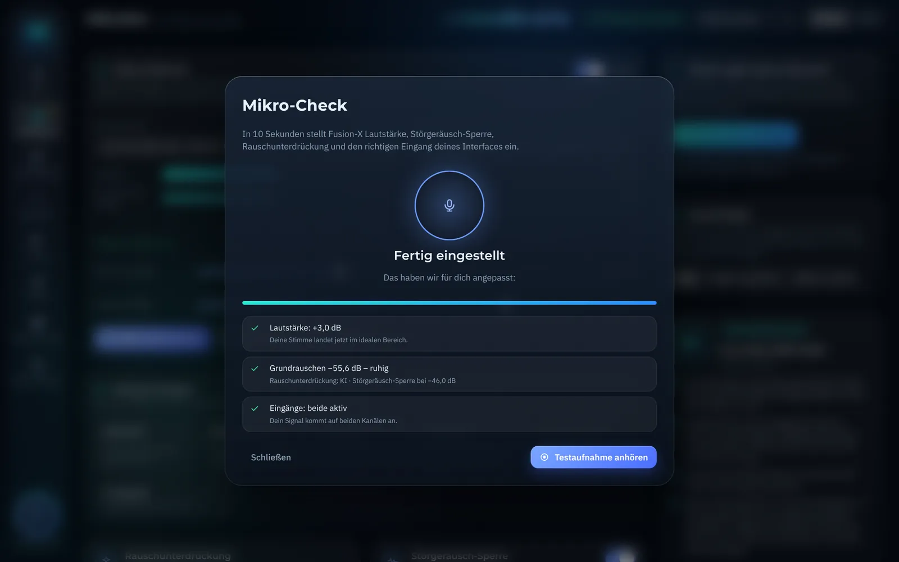
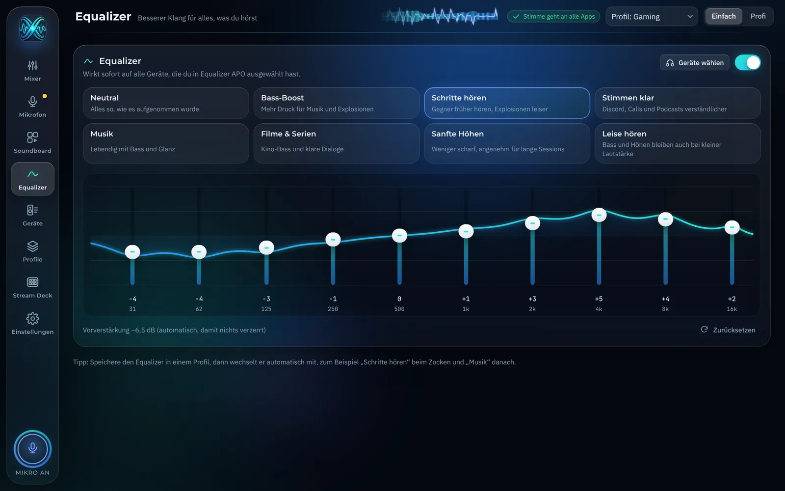
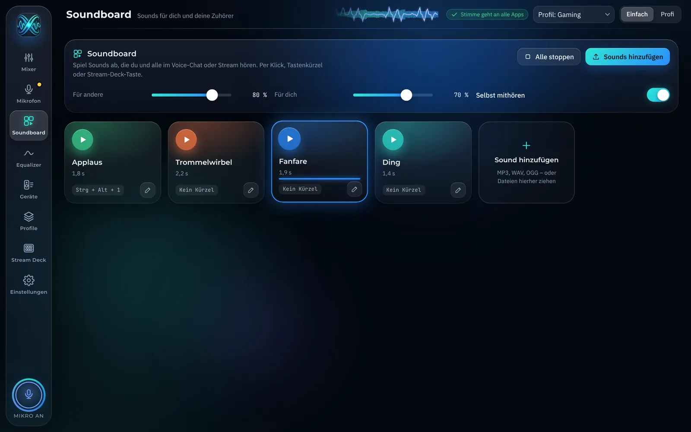
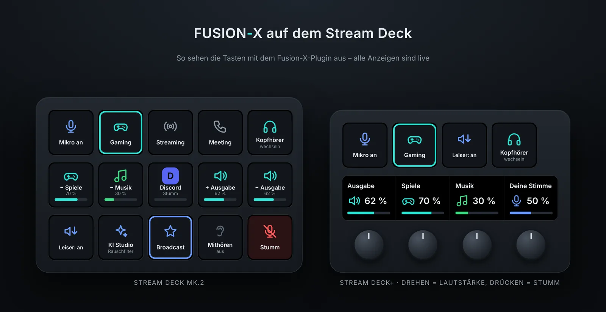

Jede App ihr eigener Regler
Spiel leiser, Discord lauter, Spotify auf die Lautsprecher: Jede App bekommt einen Fader, einen Live-Pegel und ihr eigenes Ausgabegerät. Windows vergisst Lautstärken gern, Fusion-X merkt sie sich.

Fusion-X Audio regelt jede App einzeln, macht deine Stimme klar und rauschfrei und gibt deinem Stream einen eigenen Mix. Kostenlos für Windows, mit oder ohne Audio-Interface.

Hersteller-Apps steuern nur ihr eigenes Gerät. Fusion-X steuert deinen ganzen PC-Sound, egal welches Mikro oder Headset du hast.
Spiel leiser, Discord lauter, Spotify auf die Lautsprecher: Jede App bekommt einen Fader, einen Live-Pegel und ihr eigenes Ausgabegerät. Windows vergisst Lautstärken gern, Fusion-X merkt sie sich.

KI-Rauschunterdrückung filtert Tastatur, Lüfter und bellende Hunde. Störgeräusch-Sperre, Equalizer, Kompressor und De-Esser sind fertig eingestellt. Eine Vorlage wie „Broadcast“ oder „Gaming“ reicht.

Kurz still sein, kurz sprechen. Fusion-X misst Raum und Stimme und stellt Lautstärke, Rauschfilter und den richtigen Eingang deines Interfaces selbst ein. Hängt dein Mikro nur an Eingang 1, hört man dich trotzdem auf beiden Seiten.

Zwei Regler pro App: links, was du hörst, rechts, was dein Publikum hört. Fusion-X steuert dafür OBS direkt, ohne Zusatz-Treiber. Musik nur für den Stream, Discord nur für dich: ein Klick.
Zehn Bänder für den ganzen PC, mit Vorlagen wie „Schritte hören“, „Bass-Boost“ oder „Stimmen klar“. Ohne Verzögerung und in Profilen speicherbar: beim Zocken Schritte, danach Musik.

Sound reinziehen, Taste drauf, abspielen. Du hörst ihn, dein Discord und dein Stream auch, jeweils in eigener Lautstärke.

Eigenes Plugin mit neun Aktionen und Live-Anzeige auf den Tasten: rot, wenn du stumm bist, Lautstärke als Balken. Auf dem Stream Deck+ regelst du jede App mit dem Drehregler.

Zieh an den Reglern. Halte die Sprechtaste gedrückt und sieh zu, wie Spiel und Musik automatisch leiser werden, während Discord laut bleibt.
Leertaste geht auch.
Deine Stimme mit Tastatur und Lüfter im Hintergrund. Schieb den Regler, um den Unterschied zu sehen.
Läuft direkt auf deinem PC. Nichts wird hochgeladen, nichts braucht Internet.
Fusion-X erkennt Geräte von Focusrite, Universal Audio, Behringer, PreSonus, Steinberg, Audient, MOTU, RME, Native Instruments, GoXLR und vielen mehr. Gain, 48 V und Direct Monitor bleiben am Gerät, Klang, Effekte und App-Lautstärken regelst du hier. ASIO-Treiber werden erkannt, und unterschiedliche Abtastraten meldet die App, bevor es knackst.
Genau dafür ist Fusion-X gemacht. Headset, USB-Mikro, Webcam, Laptop-Mikro oder Bluetooth: Die App erkennt, was du hast, gibt passende Tipps und hebt einen zu leisen Windows-Pegel selbst an. Die KI holt aus jedem Mikro eine klare Stimme raus.
Klick auf ein Bild für die große Ansicht.

Ja. Kein Abo, keine Werbung, kein Konto. Der Quellcode liegt offen auf GitHub.
Nein. Windows warnt bei jedem Programm, das noch keine teure digitale Signatur hat. Klick auf „Weitere Informationen“ und dann „Trotzdem ausführen“. Was die App macht, kannst du im offenen Quellcode auf GitHub nachlesen.
Nein. Fusion-X funktioniert mit jedem Mikro und Headset, auch mit dem eingebauten Laptop-Mikro. Mit Interface bekommst du zusätzlich Kanalwahl und Interface-Tipps.
Ja. Dafür nutzt Fusion-X ein virtuelles Mikrofon (VB-CABLE von VB-Audio, Donationware). Die App lädt und installiert es beim ersten Start für dich. In Discord und OBS musst du nichts umstellen.
In OBS (ab Version 28) unter Werkzeuge den WebSocket-Server einschalten und das Passwort in Fusion-X einfügen. Fusion-X legt in OBS für jede App eine eigene Audioquelle an und regelt sie mit dem rechten Regler. Das normale Desktop-Audio wird dabei stummgeschaltet, damit nichts doppelt ist.
Er nutzt das kostenlose Equalizer APO. Auf der Seite „Equalizer“ in der App auf „Herunterladen“ klicken, beim Installieren Kopfhörer und Lautsprecher anhaken, PC neu starten. Danach steuert Fusion-X alles.
Nein, im Moment nur für Windows 10 und 11.
In der App unter Einstellungen auf „Diagnose kopieren“ klicken und den Text an maxilama67@gmail.com schicken. Dann sehe ich genau, woran es liegt.
Schreib mir. Fehlerberichte und Wünsche landen direkt in der nächsten Version.